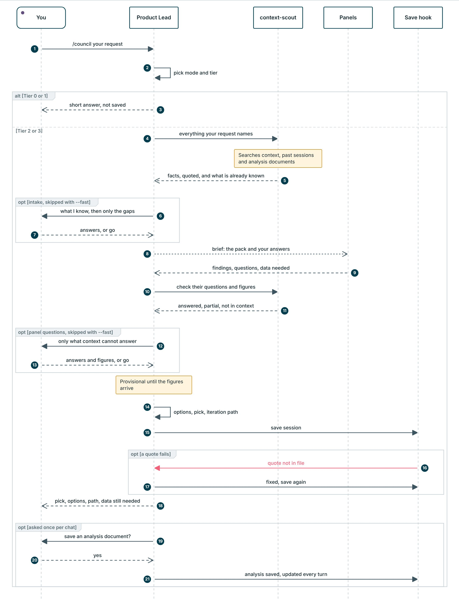
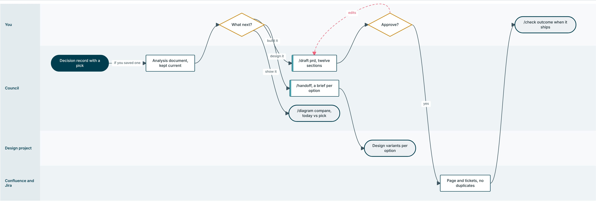

How it behaves
What the council does on its own: depth, the order of a session, questions and data, evidence, delivery and learning.
On this page
Cost tiers
The orchestrator picks the cheapest tier that can answer and says which it chose. Say "go deeper" to escalate.
| Tier | Use for | What runs | Replies | Saved? | Diagram? |
|---|---|---|---|---|---|
| 0 Answer | Facts, definitions, "what do we know about X" | The scout only. Under 150 words | One | No | No |
| 1 Quick lens | One perspective, --panels <one>, --only, radar | One panel or persona, compact. Under 250 words | One | No | No |
| 2 Focused | A real product decision. Default for every mode | Scout, intake questions, the one or two most relevant panels, their questions and data, then the decision. Decision reply under 300 words | Three | Yes | One page when the pick changes how something works |
| 3 Full council | High stakes or cross-cutting, --deep | Scout, intake questions, 3 to 6 panels in full, their questions and data, up to two challenge rounds. Decision reply under 450 words | Three or four | Yes | One page when the pick changes how something works |
Session flow
Every Tier 2 and 3 session follows this order and ends in options with a pick and a path. Tier 0 and 1 stop after step one with a short answer.

--fast. Steps 16 and 17 happen only when a quote fails the check.- TriageOne line: the mode it inferred and the tier it picked.
- Scout your input first, aloneThe scout looks up everything the request names, including the problem index of global case studies, and returns the facts with quotes. The orchestrator gates them and sends a thin pack back once.
- IntakeWhat I already know, then questions only on the gaps, each with a default, plus any conflict the decision depends on. Say "go" to use the defaults.
- Brief and panelsThe brief carries the facts, your answers and the named gaps. Panels answer in parallel without seeing each other, each ending with a viable first step, its questions and the data it needs.
- Panel questions and dataThe panels' questions and figures are checked against the context. What is left, up to five questions and one data table, comes back to you.
- Options, a pick and a pathTwo or three different approaches, do nothing included, a verdict each, one pick, its iteration path, and what would flip it.
- DiagramsWhen the pick changes how something works, every flow it touches is drawn on one page.
- Save, then keep it currentThe hook checks every quote before you see "saved". If you say yes to an analysis document, it is updated after every later turn.
Questions, data and analysis documents
A decision is only as good as what the council knows. So at Tier 2 and 3 it asks twice, asks for numbers, and leaves you a one-page document you can share and build on. Every question is a click-to-answer prompt with the default first and marked recommended, and you can always type your own answer.
Questions you can understand
Every question follows the same writing rules as the answers: one decision per question, in your words, self-contained, under 25 words, with two to four real options, the default first. A check runs before every question and sends an unclear one back to be rewritten, so a question that mentions tiers, panels, coverage labels or files, or asks two things at once, never reaches you.
| Unclear | Clear |
|---|---|
| "Can you confirm the PARTIAL coverage on problem and who has it?" | "Is this about every shopper, or mainly first-time app users?" |
| "Should we go with B and also let shoppers pre-approve substitutions?" | Two questions: "Should the picker call when an item is out of stock?" and "Should shoppers set substitution rules before checkout?" |
Two rounds of questions
| Reply | What you get |
|---|---|
| 1. Intake | What I already know, with sources. Then up to four numbered questions on what the context cannot answer: the problem and who has it, the outcome and why now, the data you have, constraints. Each has a default. Skipped when nothing is missing |
| 2. Panel questions and data | What the panels see so far, what the context answered for them, up to five remaining questions (who asked, why, the default), and one data table |
| 3. Decision | The pick, the options, the path, data still needed, open questions, one next step. Under 300 words |
Data decides
Each panel names up to two figures it needs. The council asks for them in one table. It never estimates a missing figure, never writes a query for you, and writes a threshold only when you or the context supply one.
| Figure | Why it matters | Likely where | If it comes back... |
|---|---|---|---|
| Out-of-stock lines per 100 orders, last 8 weeks | Sizes the problem | Order management or picking reports | Low: do nothing likely wins. High: the build options earn their cost |
A pick that waits on data says "provisional until" the figure. When you paste a number, the reply says whether it confirmed the pick, changed a condition, or flipped it.
The decision reply
An illustrative reply, to show the shape.
Pick: B, shoppers set substitution rules at checkout (BUILD WITH CONDITIONS, provisional until the out-of-stock rate is known). Pickers already call shoppers, and rules set in advance remove most calls. | Option | Verdict | One line | | A Picker calls every time | NEEDS EVIDENCE | Works only while volume is low | | B Rules at checkout | BUILD WITH CONDITIONS | Fewer calls, shopper stays in control | | Do nothing | KILL | Refunds and complaints continue | Path: Now, rules for the top 20 categories (proves shoppers set them). Next, smart suggestions from past choices. Later, auto-substitute by default. Data still needed: out-of-stock lines per 100 orders (low favours do nothing). Next: pull the last 8 weeks of short-picks from order management.
The full record, with every quote, sits in the saved session.
Analysis documents
After the first decision in a chat, the council asks once whether to save an analysis document. Yes writes analysis/<slug>.md and rewrites it after every later turn in that chat. It is one page, 500 words at most, and the save check refuses more. Continue in a new chat with /council --analysis <slug> <next question>.
| Section | What it says |
|---|---|
| Summary | The recommendation, how sure we are, and what would change it, in two or three sentences |
| Problem | Who has it, how often, how we know |
| Who it affects | Up to four groups, today against the recommendation |
| Options | Each approach with its verdict and one line of why, do nothing included |
| Recommendation | The pick, its main condition, and the Now, Next, Later path |
| Still open and changes | Up to five open questions or missing figures, and the last five changes |
The PRD
/draft prd builds a PRD from the decision record and the analysis document, in twelve fixed sections. Its body is clean like the analysis document, so it reads well in Confluence or as a file. The evidence stays in the decision record.
| Section | Answers |
|---|---|
| Problem | What business problem are we solving? |
| Business need | Why is this important now? |
| Expected outcome | What measurable outcome are we expecting? |
| KPI | Baseline and target |
| Background and context | Current process (as-is), customer and user pain points, business drivers, regulatory drivers |
| Approach details | Approach, in scope, out of scope |
| Assumptions | What we take as true, and how it will be checked |
| Dependencies | Cross domains, teams or products |
| Persona affected | Who this changes, and how |
| Functional requirements | What the product must do |
| Non-functional requirements | How well it must do it |
| Open questions | What must be answered before or during build |
Evidence, options and handoffs
The rules that decide whether a council output can be trusted and used.
Evidence has to be quoted
| Form | What it proves |
|---|---|
[V: path] | The file exists. Acceptable only for background with no specific claim attached |
[V: path "verbatim words"] | The file says this. Required for anything the recommendation rests on |
[I] claim, because reasoning | An inference with its reasoning stated. An [I] with no reasoning is an assertion wearing a tag |
[U] | Not in context. The honest answer, and the orchestrator names it as an unassessed risk |
The save hook checks every quote against its file and sends a failure back to be fixed before you see the result. By hand: python3 scripts/check_citations.py <file>. Full rules in rules/evidence.md.
A case is a perspective, never a template
When a solution comes from another market, the council names the region and runs the case's transfer check: does this market have the density, labour cost, payment rails and regulation that made it work there? A failed transfer is a finding, not a footnote.
Options, not one verdict
Tier 2 and 3 return two or three options, each a genuinely different approach, each with its own verdict, and one named pick. "Do nothing" is always on the table with its cost stated, and the record says what would make you switch to the runner-up. Three sizes of one approach is one option, not three. The pick carries an iteration path: what ships now, what it proves, and what comes next.
IDs carry their titles
A bare ID tells a reader nothing, so no output prints an ID alone. The save hook appends a legend resolving every ID to its title and file; python3 scripts/resolve_ids.py sessions/ --check finds bare ones.
Handing a decision to design
/handoff writes one brief per option, so the design project produces variants per approach instead of one blend. Each brief links the user flow drawn for that option and ends in one paste-ready block.
From decision to delivery
What happens after a session. Scroll sideways on a small screen.

Learning loop
One correction today prevents the same mistake in every future session.
Automatic behaviour
These run on their own. Checks a script can do are never left to the model's memory. Run python3 scripts/selftest.py to check all of them on a throwaway copy.
| When | What happens |
|---|---|
| Session start | Rebuilds the index and lessons digest, then briefs you on lessons, open items, sources not yet ingested and days since the last /check |
| Before a question | Checks every click-to-answer question is clear: one decision, your words, short, real options. An unclear one goes back to Claude to rewrite |
| Before any edit | Blocks changes to existing raw sources, and edits to shared content on main |
| After any edit | Context: rebuilds the index. Session or draft: checks every quote. Analysis document or PRD: checks it names no files, IDs, personas or panels, and the analysis fits on one page. Diagram spec: renders the HTML |
| After every turn | Adds the ID legend to sessions and drafts written that turn, makes sure the analysis question was asked after a decision, and logs token usage to metrics/usage/ |
| Before any commit | Blocks shared-content commits on main and commits with invalid context frontmatter |
Working as a team
- Start a branch
python3 scripts/start_project.py branch <topic>createspm/<you>/<topic>from the latest main. - WorkSessions, intake, drafts and diagrams. IDs carry a date and a random suffix, so nobody's IDs clash.
- Open a pull request
/open-prchecks quality, ID clashes and conflicts with the latest main, then opens the request. - Review and mergeThe curator reviews shared content. Append-only logs merge automatically.
Branch protection for GitHub, Bitbucket and AWS CodeCommit is covered in CONTRIBUTING.md.